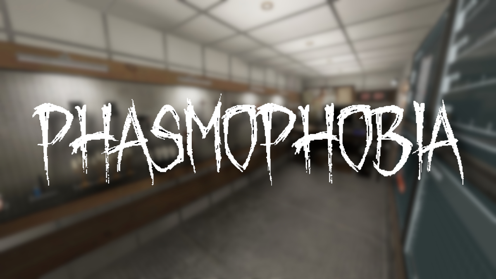

The Last of US PartII.

A The Last of Us Part II egy 2020-as akció-kalandjáték, amelyet a Naughty Dog fejlesztett és a Sony Interactive Entertainment adott ki.The Last of Us Part II egy harmadik személy nézőpontjából játszott akció-kalandjáték, amely a túlélő horror műfajának elemeit tartalmazza .A játékos posztapokaliptikus környezeteken, például épületeken és erdőkön halad keresztül, hogy előrébb vigye a történetet. A játékos lőfegyvereket, rögtönzött fegyvereket és lopakodó eszközöket használhat az ellenséges emberek és a Cordyceps gomba mutáns törzsével fertőzött kannibál lények ellen . A vezérlés időszakosan vált Ellie és Abby között a játékos röviden irányítja Joelt is a nyitószekvenciában. A játékos karakterének fürge természete platformelemeket vezet be , lehetővé téve a játékos számára, hogy ugorjon és mászzon át áthaladó környezetekben, és előnyökhöz jussanak a harc során. A lejátszó betörhet üvegtárgyakat, például ablakokat, hogy hozzáférjen bizonyos területekhez vagy kellékeket szerezzen be. Egyes területeken lóval vagy csónakkal közlekednek.
Shadow of the Tomb Raider

A Shadow of the Tomb Raider egy 2018-as akció-kalandjáték, amelyet az Eidos-Montréal fejlesztett, és a Square Enix európai leányvállalata adott ki. A játék harmadik személy nézőpontjából játszható, a játékos Lara Croft szerepében fedezi fel Mexikó és Peru változatos helyszíneit. A történet során a játékos különböző önálló területeket látogat meg, emellett felfedezheti a Paititi rejtett városát, amely a játék központi helyszíne. A barterrendszer lehetővé teszi a játékos számára, hogy különféle erőforrásokat gyűjtsön, amelyeket eladhat vagy cserélhet a várost körülvevő területeken. A játékmenet a felfedezés, a lopakodás és a harc elemeire épít, miközben Lara kihívásokkal teli rejtvényeket old meg és halálos csapdákon verekedi át magát a történet előrehaladása érdekében.A Shadow of the Tomb Raider egy 2018-as akció-kalandjáték, amelyet az Eidos-Montréal fejlesztett, és a Square Enix európai leányvállalata adott ki. A játékot harmadik személy nézőpontjából játszhatják a játékosok.
Plague Tale Requiem

Az A Plague Tale: Requiem egy akció-kalandos lopakodó videojáték, amelyet az Asobo Studio fejlesztett és a Focus Entertainment adott ki.A Requiem egy akció- kalandjáték, amelyet harmadik személy szemszögéből játszanak . A játékban a játékos átveszi Amicia irányítását, és szembe kell néznie az ellenséges emberekkel és a fekete pestist terjesztő patkányhordákkal . A játékmenet nagymértékben hasonlít az első játékhoz, bár a harcrendszer jelentősen kibővült. Amicia olyan fegyverekkel van felszerelve, mint egy kés az ellenség megszúrásához, egy heveder, amellyel köveket dobhat, és egy számszeríj , amellyel legyőzheti páncélozott ellenfeleit. A számszeríjcsavarok, a dobóedények és a sziklák kombinálhatók alkímiai keverékekkel. Az Ignifer és az Extinguis mellett, amelyek lehetővé teszik a játékos számára a láng meggyújtását, illetve eloltását, a játék bemutatja a tar , amely növeli a fényforrás sugarát, és ellenségek meggyújtására használható.
Phasmophobia
A Phasmophobia egy 2020-ban megjelent kooperatív horrorjáték, amelyet a Kinetic Games fejlesztett. A játékban a játékosok paranormális nyomozók szerepét veszik át, akik különböző kísértetjárta helyszíneken próbálják azonosítani a jelenlévő szellemeket. A játék belső nézetből játszható, és nagy hangsúlyt helyez a csapatmunkára, mivel a játékosoknak összehangoltan kell dolgozniuk, hogy sikeresen teljesítsék küldetésüket. A helyszínek között találunk kis vidéki házakat, elhagyatott iskolákat, börtönöket és még nagyobb intézményeket is, mindegyik saját atmoszférával és kihívásokkal. A cél az, hogy elegendő bizonyítékot gyűjtsenek össze a szellem típusának meghatározásához, miközben elkerülik a halálos támadásokat. A játékosok különböző felszereléseket használhatnak a nyomozás során, mint például az EMF-olvasó, amely az elektromágneses mező változásait érzékeli, a szellemírásfüzet, amelyben a szellemek üzenetet hagyhatnak, és a hőmérő, amely segít azonosítani a hidegpontokat, ahol a szellem jelen lehet.